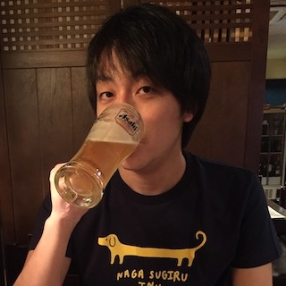

Portfolio

Mizuki901
hirakawa.mizuki


Strength
フロントエンドとバックエンドの両方のエンジニア経験がある。 また、インフラエンジニアの経験もあり、特にLinux、AWS、Dockerが得意。
認定スクラムマスター (CSM®) の資格を有し、スクラムマスターとしてチームの支援を行える。 また、LeSS (Large-Scale Scrum) のスクラムマスター経験もある。
Favorite
Node.js, JavaScript, TypeScript, Vue.js, Vite, Cypress, Ruby, C, Docker, Ansible, AWS, Scrum, Agile, DevOps, GitLab, GitHub, Codespaces, GitHub Copilot, VSCode
Biography
2015
九州大学大学院 情報学専攻 修士課程修了。
富士通株式会社
に新卒入社。
複数のアジャイルプロジェクトを経験。
2016
Microsoft主催の
DevOpsハッカソン
に参加。
2017
プロジェクトで始めてスクラムマスターを経験。
LINE BOT AWARD 2017
に1人で応募し敗退。
2018
JASPIC
（ソフトウェア開発プロセス改善の非営利団体）に所属。
SPI Japan 2018
のプログラム委員を務める。
2019
認定スクラムマスター (CSM®)
の資格を取得。
SPI Japan 2019
のプログラム委員を務める。
SPI Japan 2019に登壇（
発表内容
）。
JASPIC会員企業による事例発表会において、2019年度最優秀発表賞を受賞。
2020
LeSS (Large-Scale Scrum)
のプロジェクトでスクラムマスターを経験。
富士通株式会社を退職。
JASPICを退会。
株式会社ヴァル研究所
に転職（所属：
駅すぱあと API
チーム）。
2023
Ruby biz grand prix 2023
に「駅すぱあと API」として応募し、ソーシャルインパクト賞を受賞。